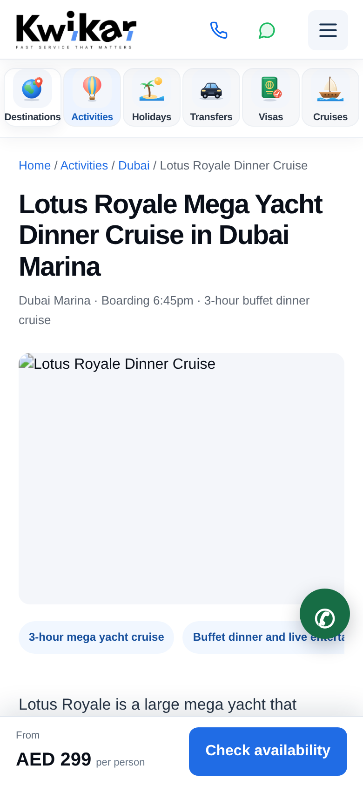
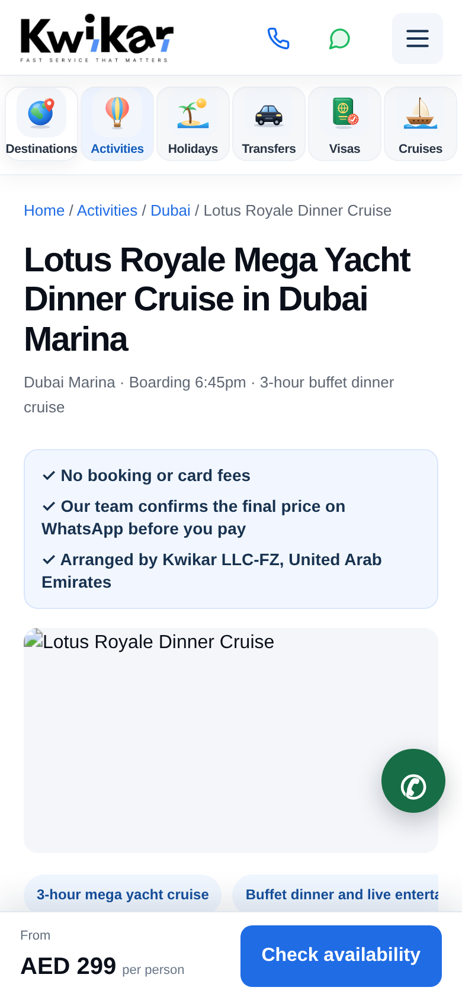

Designer, 14 Nov 2026 — needs Irfan's approval (new section). On tour pages the first screen on mobile shows the title and a big photo, but none of the reasons to trust us. Competitors (e.g. chauffeurr.ae) show a trust row right under the H1. Idea: a small 3-line box under the subtitle, using only things that are already true and already on the page: "No booking or card fees", "Our team confirms the final price on WhatsApp before you pay", "Arranged by Kwikar LLC-FZ, United Arab Emirates". No ratings or badges. When Nomod "Pay now" goes live, line 2 can change to match.
Expected benefit: more visitors tap "Check availability" / WhatsApp from the first screen; fewer leave because they're unsure who they're booking with.
Cost: the photo moves down ~100px on mobile (desktop: could sit in the side booking card instead).

